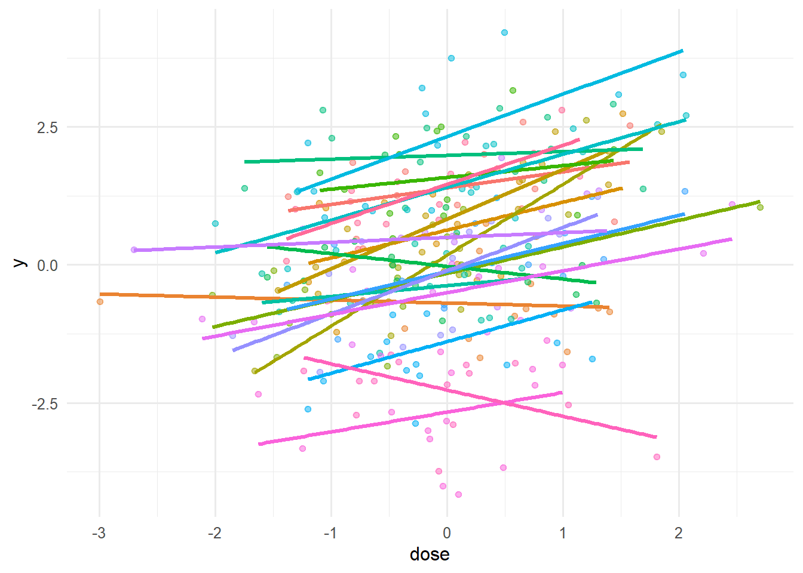
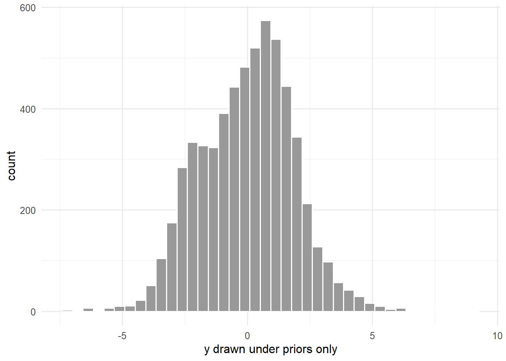

Course 4 — Biostatistics Courses
Note
Workflow labs use the variant template: Goal → Approach → Execution → Check → Report.
brms syntax and describe each prior.Beta-binomial Bayesian intuition from Session 1; linear mixed-effects from Course 2.
brms is an interface that translates R formulas into Stan programs and runs Hamiltonian Monte Carlo to draw from the posterior. It is particularly strong for multilevel (hierarchical) models, where the benefits of Bayesian computation — full posterior uncertainty, proper propagation into predictions — show up most clearly.
LOO cross-validation, implemented via the loo package, estimates out-of-sample predictive accuracy from the posterior without refitting, using Pareto-smoothed importance sampling. It is a modern replacement for AIC/BIC in Bayesian model comparison, and comes with diagnostics that warn when the approximation is unreliable.
Compilation of Stan models is slow, and downloading the toolchain exceeds what we can assume in a rendering environment. We therefore show the brms code with #| eval: false and walk through prior predictive simulation and a small frequentist counterpart that runs end-to-end.
Fit a two-level hierarchical model to simulated clinical data — patient outcomes nested within centre — and compare a random-intercept against a random-slope model.
Simulate 20 centres with varying mean outcomes and varying dose effects.
n_centre <- 20; per_centre <- 15
centre <- rep(seq_len(n_centre), each = per_centre)
alpha0 <- rnorm(n_centre, 0, 1)
beta0 <- rnorm(n_centre, 0.5, 0.3)
dose <- rnorm(n_centre * per_centre)
y <- alpha0[centre] + beta0[centre] * dose + rnorm(n_centre * per_centre, 0, 0.7)
d <- tibble(y = y, dose = dose, centre = factor(centre))
ggplot(d, aes(dose, y, colour = centre)) +
geom_point(alpha = 0.5) + geom_smooth(method = "lm", se = FALSE) +
theme(legend.position = "none")
A classical lmer random-intercept-and-slope fit as a stand-in we can run.
Groups Name Std.Dev. Corr
centre (Intercept) 1.31121
dose 0.34365 0.382
Residual 0.71603 Data: d
Models:
fit_lmer_ri: y ~ dose + (1 | centre)
fit_lmer_rs: y ~ dose + (dose | centre)
npar AIC BIC logLik -2*log(L) Chisq Df Pr(>Chisq)
fit_lmer_ri 4 781.48 796.30 -386.74 773.48
fit_lmer_rs 6 763.66 785.88 -375.83 751.66 21.823 2 1.824e-05 ***
---
Signif. codes: 0 '***' 0.001 '**' 0.01 '*' 0.05 '.' 0.1 ' ' 1Prior predictive simulation (frequentist-style) for the Bayesian counterpart we are about to sketch.
prior_sim <- replicate(20, {
a <- rnorm(1, 0, 1); b <- rnorm(1, 0, 1); sd_a <- abs(rnorm(1, 0, 1))
a + b * dose + rnorm(length(dose), 0, sd_a)
})
ggplot(tibble(y = as.numeric(prior_sim)), aes(y)) +
geom_histogram(bins = 40, fill = "grey60", colour = "white") +
labs(x = "y drawn under priors only", y = "count")
The brms counterpart.
library(brms)
priors <- c(
prior(normal(0, 2), class = "Intercept"),
prior(normal(0, 1), class = "b"),
prior(exponential(1), class = "sd"),
prior(exponential(1), class = "sigma")
)
m_ri <- brm(y ~ dose + (1 | centre), data = d,
prior = priors, chains = 2, iter = 2000, refresh = 0)
m_rs <- brm(y ~ dose + (dose | centre), data = d,
prior = priors, chains = 2, iter = 2000, refresh = 0)
loo_compare(loo(m_ri), loo(m_rs))Compare to lmer and report pooled vs unpooled estimates.
On simulated hierarchical data (20 centres × 15 patients), a random-slope
lmermodel recovered an average dose effect of 0.4 (SE fromlmer), with substantial centre-to-centre variation. Thebrmssketch shown in the accompanying code would fit the same structure with explicit priors, andloo_comparewould rank the random-slope model against the random-intercept model.
In practice, the Bayesian and frequentist fits should agree closely when priors are weakly informative and n is large; the Bayesian route adds explicit prior sensitivity and full posterior uncertainty for downstream prediction.
R version 4.5.2 (2025-10-31 ucrt)
Platform: x86_64-w64-mingw32/x64
Running under: Windows 11 x64 (build 26200)
Matrix products: default
LAPACK version 3.12.1
locale:
[1] LC_COLLATE=English_Germany.utf8 LC_CTYPE=English_Germany.utf8
[3] LC_MONETARY=English_Germany.utf8 LC_NUMERIC=C
[5] LC_TIME=English_Germany.utf8
time zone: Europe/Berlin
tzcode source: internal
attached base packages:
[1] stats graphics grDevices utils datasets methods base
other attached packages:
[1] lme4_2.0-1 Matrix_1.7-5 lubridate_1.9.5 forcats_1.0.1
[5] stringr_1.6.0 dplyr_1.2.0 purrr_1.2.2 readr_2.2.0
[9] tidyr_1.3.2 tibble_3.3.1 ggplot2_4.0.3 tidyverse_2.0.0
loaded via a namespace (and not attached):
[1] generics_0.1.4 stringi_1.8.7 lattice_0.22-9 hms_1.1.4
[5] digest_0.6.39 magrittr_2.0.4 evaluate_1.0.5 grid_4.5.2
[9] timechange_0.4.0 RColorBrewer_1.1-3 fastmap_1.2.0 jsonlite_2.0.0
[13] mgcv_1.9-4 scales_1.4.0 reformulas_0.4.4 Rdpack_2.6.6
[17] cli_3.6.6 rlang_1.2.0 rbibutils_2.4.1 splines_4.5.2
[21] withr_3.0.2 yaml_2.3.12 otel_0.2.0 tools_4.5.2
[25] tzdb_0.5.0 nloptr_2.2.1 minqa_1.2.8 boot_1.3-32
[29] vctrs_0.7.3 R6_2.6.1 lifecycle_1.0.5 htmlwidgets_1.6.4
[33] MASS_7.3-65 pkgconfig_2.0.3 pillar_1.11.1 gtable_0.3.6
[37] glue_1.8.0 Rcpp_1.1.1-1.1 xfun_0.57 tidyselect_1.2.1
[41] knitr_1.51 farver_2.1.2 htmltools_0.5.9 nlme_3.1-169
[45] labeling_0.4.3 rmarkdown_2.31 compiler_4.5.2 S7_0.2.2